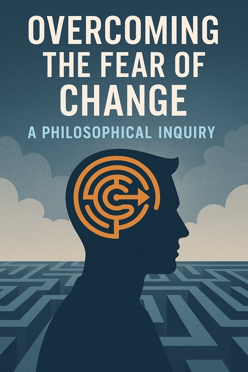

A Prisão Dourada da Inércia - Ensaio
Publicado em 2025-06-23 10:16:04

Ensaio Filosófico e Neurocientífico sobre a Aversão Humana à Mudança
Francisco Gonçalves & Augustus, 2025
1. O Cérebro como Guardião do Conhecido
A mudança, para muitos, é sinónimo de ameaça. Esta reação não é apenas cultural — é neurológica.
O cérebro humano é uma máquina preditiva, esculpida ao longo de milénios para antecipar perigos e reagir com rapidez.
A estrutura chamada
amígdala, centro do medo e da resposta emocional, entra em alerta sempre que o padrão do quotidiano
é quebrado. Em tempos ancestrais, isso era uma vantagem evolutiva. Hoje torna‑se um inibidor do progresso.
2. A Homeostase Psicológica e o Conforto do Sofrimento
Mais paradoxal ainda é o fenómeno da
homeostase psicológica — a tendência do ser humano para manter o equilíbrio interno,
mesmo que isso signifique permanecer numa realidade dolorosa ou insatisfatória. O cérebro prefere a certeza de um inferno conhecido
à possibilidade de um paraíso incerto.
3. Filosofia do Medo: entre Kierkegaard e Nietzsche
Kierkegaard falava da “vertigem da liberdade”. A possibilidade de escolha provoca angústia existencial.
Nietzsche via a mudança como solo fértil da vontade de poder, mas alertava: os fracos temem o novo porque nele reside o espelho
das suas insuficiências.
4. As Catedrais do Imobilismo
Religião, política, educação — todas as grandes estruturas humanas foram moldadas para garantir estabilidade.
Mas, com o tempo, muitas transformaram‑se em
catedrais do imobilismo, onde a mudança é vista como heresia.
5. Neuroplasticidade: A Esperança em Circuitos Novos
A
neuroplasticidade mostra‑nos que a mudança é possível até ao último sopro. Treinar a mente para acolher o novo,
questionar dogmas — são atos de rebeldia neuronal e coragem filosófica.
“Nada é permanente, exceto a mudança.” — Heraclito
Epílogo: Despertar ou Adormecer de Pé?
Num planeta à beira de colapsos climáticos, éticos e sociais, a mudança deixou de ser escolha — tornou‑se sobrevivência.
Será que temos a audácia de contrariar a nossa programação ancestral ou permaneceremos, escravos do conforto,
morrendo de pé como árvores secas?
Capítulo final – Impactos Sociais da Aversão à Mudança
1. Sociedades que Temem o Futuro Repetem o Passado
A história está cheia de impérios que ruíram não por falta de recursos, mas por incapacidade de se adaptar.
Roma, China imperial, Império Otomano — e, por vezes, Portugal. A aversão gera sociedades de repetição onde erros se eternizam.
2. Educação Estática: Fabricar Funcionários em vez de Cidadãos
Quando a educação recusa mudar, forma jovens para um mundo que já não existe. A criatividade é punida, a dúvida silenciada.
Criam‑se mentes obedientes, incapazes de redesenhar a máquina.
3. A Política como Ritual, Não como Renovação
Reformas estruturais são adiadas e crises eternizam‑se. Resultado: desconfiança, abstenção, e movimentos radicais
que oferecem o conforto ilusório do passado glorioso.
4. Economia Estagnada: Quando a Inovação é Suspeita
Num ambiente avesso ao novo, empreendedores são vistos como lunáticos. A economia torna‑se dependente de subsídios
e não de génio nem engenharia.
5. Cultura: Do Despertar à Infantilização
A cultura converte‑se em entretenimento superficial. Desaparece o teatro que incomoda, o cinema que provoca,
e a literatura que questiona.
Conclusão
Uma sociedade que teme a mudança escolhe a mediocridade como travesseiro. Mas há um preço:
a liberdade morre lentamente e o futuro é escrito por outros — mais ousados, mais abertos, mais preparados.
Excerto
"Desde as cavernas ao escritório digital, o ser humano demonstrou uma curiosa ambivalência: deseja melhorar, mas resiste ao caminho que o conduz à mudança. Esta aversão, enraizada nas profundezas da biologia e da cultura, manifesta-se como um instinto de autoproteção — mas acaba frequentemente por ser o maior obstáculo à evolução pessoal e coletiva. A sociedade que teme mudar, adormece no conforto das rotinas e perpetua os seus próprios limites. É nesta fricção entre o novo e o habitual que se decide o futuro da humanidade."
NOTA FINAL :
Há uma citação atribuída ao ditador Salazar e esta frase é tão mordaz quanto reveladora da mentalidade conservadora que atravessa gerações em Portugal. Salazar, com todo o seu apego ao imobilismo e à rigidez do regime, percebeu algo que infelizmente continua a ter eco: um certo medo coletivo do risco, do novo, da transformação.
Essa atitude cultural reflete-se na política, na economia, na educação e até nos pequenos hábitos do quotidiano. Em vez de encarar a mudança como motor de progresso, muitos veem-na como ameaça à estabilidade — mesmo quando essa “estabilidade” é apenas a manutenção da mediocridade.
“A humanidade em geral não gosta da mudança, mas os portugueses, esses então gostam muito menos.” — António de Oliveira Salazar
Uma frase vinda de um ditador, sim — mas que acerta, irónica e inquietantemente, no retrato de uma sociedade que tantas vezes se resigna ao marasmo. Se queremos reinventar Portugal, temos nós o colectivo de sair deste antro de mediocridade.